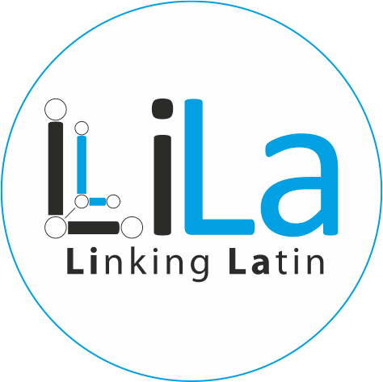
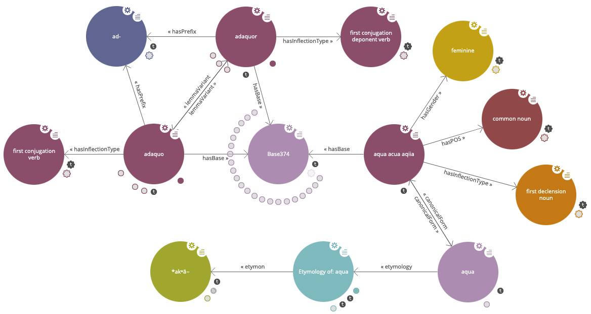
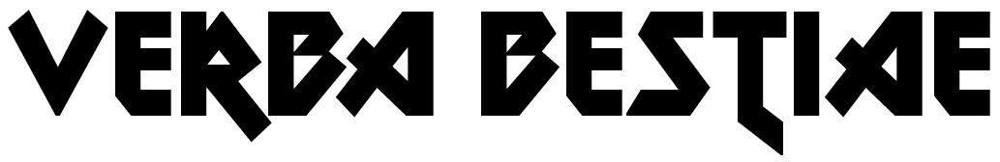
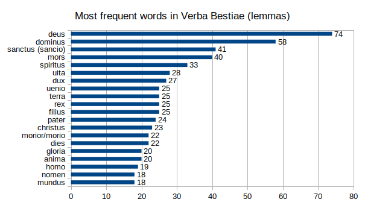

Natural Language Processing
An introduction
Encoder, Exploiter, Diffuser: Les humanités numériques dans les projets de recherche
Winter School · University of Poitiers
10-14 February 2020
Twitter: #enexdi2020
Greta H. Franzini
The course
- Theory
- Overview of Natural Language Processing
- Automatic processing of written or spoken information in natural language (modern or historical)
- Practice
- Text preparation with the command line
- Lemmatisation and PoS-tagging (with TreeTagger)
- Not covered
- Programming
- BA Hons. in Classics · King's College London philology
- MA in Digital Humanities · King's College London TEI XML XSLT web development with HTML/CSS
- Ph.D in Information Studies · University College London digital editions TEI XML (EpiDoc) palaeography
Experience
- Leipzig (2013-2015) · Open Greek & Latin Project digitisation OCR project management
- Digitisation of critical editions of Greek and Latin texts
- Göttingen (2015-2018) · Text Reuse Detection with TRACER Information Retrieval NLP command line
- Automatic identification of verbatim quotations and paraphrase in ancient texts
- Milan (2018-present) · LiLa: Linking Latin NLP SQL databases Linked Data Semantic Web
- Connecting linguistic resources and tools for Latin with Linked Data technology
Current projects
LiLa: Linking Latin 
A knowledge base of linguistic resources and tools for Latin
- Passarotti, M., Cecchini, F. M., Litta, E., Franzini, G., Mambrini, F., Ruffolo, P. (2019) 'LiLa: Linking Latin – A Knowledge Base of Linguistic Resources and NLP Tools', 2nd Conference on Language, Data and Knowledge (LDK 2019). Leipzig, May 2019, 20-23. DOI: 10.5281/zenodo.3358550

The use of Latin in Heavy Metal music
- Cecchini, F. M., Franzini, G., Passarotti, M. (forthcoming 2020) 'Verba Bestiae: How Latin conquered Heavy Metal', Multilingual Metal: Sociocultural, Linguistic and Literary Perspectives on Heavy Metal Lyrics (Emerald Studies in Metal Music and Culture). Emerald Publishing Limited.
Latin in 100 years of cinema
The use of Latin in movies and TV series between 1913-2018
- Develop a Latin language detector to filter 4,957,376 subtitle files
- Goals:
- Patterns, e.g. country, genre, year, rating, director, etc.
- Study of quoted vs. original Latin:
- Higitus figitus migitus mum, prestidigitonium!, Skypus interruptus, numquam fumes cannabis, magna cum loudly, tempura sit, non habemus carjack desolatus, e pluribus aluminum, quid pro fucking quo, ...
- Refine the language detector:
- Zucchinis in bikinis, potus, benefit album, lasagna wit pesto in portofino, o cannabis o cannabis, trabant, quasimodo qua qua quasimodo, ...